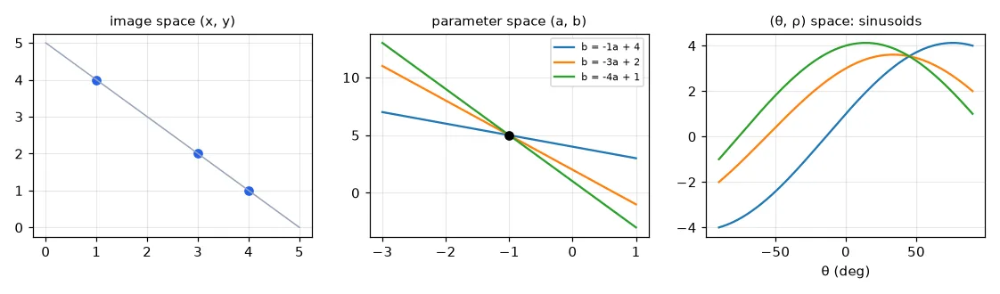
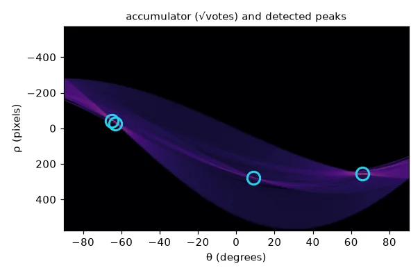
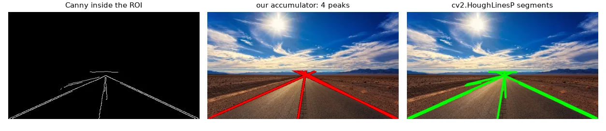
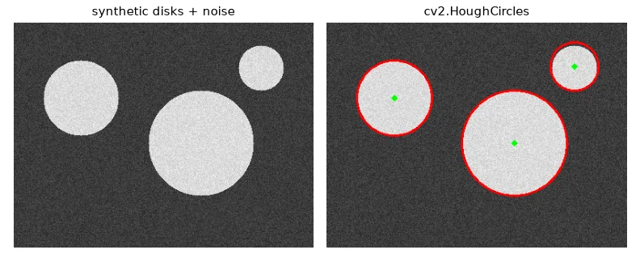

From pixels to lines: voting#
Edge detection gives us pixels. Many tasks need shapes: the lanes of a road, the edges of a building, a circular marker. The Hough transform finds them by voting.
A line \(y = ax + b\) through a point \((x_0, y_0)\) satisfies \(b = -x_0 a + y_0\): in the parameter space \((a, b)\), all the lines through one image point form a line. Points that are collinear in the image produce lines that all cross at one \((a, b)\) — the parameters of the line they share.
# Each image point (x, y) is a whole *line* b = -x a + y in the (a, b) parameter space.
# Points that are collinear in the image give lines that meet at one (a, b).
pts = [(1, 4), (3, 2), (4, 1)] # all on y = -x + 5
a = np.linspace(-3, 1, 100)

The slope \(a\) is infinite for vertical lines, so in practice we use the normal form: \(\rho\) is the distance from the origin to the line and \(\theta\) the angle of its normal,
The accumulator#
Discretise \((\rho, \theta)\) into a grid of counters. Every edge pixel adds one vote to every cell \((\rho(\theta), \theta)\) along its sinusoid. Cells where many sinusoids cross collect many votes.
def hough_lines_acc(edges, rho_res=1, theta_res_deg=1):
"""Vote in (rho, theta): rho = x cos(theta) + y sin(theta)."""
h, w = edges.shape
diag = int(np.ceil(np.hypot(h, w)))
rhos = np.arange(-diag, diag + 1, rho_res)
thetas = np.deg2rad(np.arange(-90, 90, theta_res_deg))
acc = np.zeros((len(rhos), len(thetas)), np.int32)
ys, xs = np.nonzero(edges)
cos_t, sin_t = np.cos(thetas), np.sin(thetas)
for x, y in zip(xs, ys): # one sinusoid per edge pixel
r = np.round((x * cos_t + y * sin_t) / rho_res).astype(int) + diag // rho_res
acc[r, np.arange(len(thetas))] += 1
return acc, rhos, thetas
Finding the peaks#
The \(n\) largest cells are not \(n\) different lines: a real line produces a blob of high cells around its true parameters. After taking the maximum, clear its neighbourhood before looking for the next one — non-maximum suppression again.
def hough_peaks(acc, n, min_votes=1, nms_size=21):
"""The n highest cells, each one clearing its neighbourhood (non-maximum suppression)."""
acc = acc.copy()
peaks = []
half = nms_size // 2
for _ in range(n):
r, t = np.unravel_index(np.argmax(acc), acc.shape)
if acc[r, t] < min_votes:
break
peaks.append((r, t))
acc[max(0, r - half):r + half + 1, max(0, t - half):t + half + 1] = 0
return peaks
def draw_lines(img, lines, color=(0, 0, 255), thickness=2):
"""lines: iterable of (rho, theta)."""
out = img.copy()
for rho, theta in lines:
a, b = np.cos(theta), np.sin(theta)
x0, y0 = a * rho, b * rho # closest point of the line to the origin
p1 = (int(x0 - 2000 * b), int(y0 + 2000 * a))
p2 = (int(x0 + 2000 * b), int(y0 - 2000 * a))
cv2.line(out, p1, p2, color, thickness, cv2.LINE_AA)
return out
Lane detection#
A minimal lane detector: Canny edges, a trapezoidal region of interest in front of the car (so trees and the horizon don't vote), Hough, draw.
edges = cv2.Canny(cv2.GaussianBlur(gray, (5, 5), 0), 50, 150)
# keep only a trapezoid in front of the car: the region of interest
roi = np.zeros_like(edges)
h, w = edges.shape
poly = np.array([[(0, h), (w, h), (w // 2 + 30, int(h * 0.55)), (w // 2 - 30, int(h * 0.55))]], np.int32)
cv2.fillPoly(roi, poly, 255)
edges_roi = cv2.bitwise_and(edges, roi)
acc, rhos, thetas = hough_lines_acc(edges_roi)
peaks = hough_peaks(acc, n=4, min_votes=40)
lines = [(rhos[r], thetas[t]) for r, t in peaks]

cv_lines = cv2.HoughLines(edges_roi, rho=1, theta=np.pi / 180, threshold=60) # (rho, theta)
segments = cv2.HoughLinesP(edges_roi, 1, np.pi / 180, threshold=30,
minLineLength=30, maxLineGap=20) # (x1, y1, x2, y2)
HoughLines returns \((\rho, \theta)\) pairs like ours. HoughLinesP — the probabilistic Hough transform — samples a subset of the edge pixels and returns finite segments \((x_1, y_1, x_2, y_2)\), which is usually what you want.
Output shapes changed in OpenCV 5
OpenCV 4 returns arrays of shape (N, 1, 4) (or (N, 1, 2)); OpenCV 5 returns (N, 4). Writing lines.reshape(-1, 4) works with both. Also check for None when nothing is found.

Circles#
A circle has three parameters \((x_c, y_c, r)\), so a naive accumulator is 3-D and slow. HoughCircles uses the gradient direction to vote only along the normal of each edge pixel.
canvas = np.full((300, 400), 40, np.uint8)
for (cx, cy, r) in [(90, 100, 50), (250, 160, 70), (330, 60, 30)]:
cv2.circle(canvas, (cx, cy), r, 200, -1)
canvas = cv2.add(canvas, np.random.randint(0, 40, canvas.shape, dtype=np.uint8))
circles = cv2.HoughCircles(cv2.medianBlur(canvas, 5), cv2.HOUGH_GRADIENT, dp=1, minDist=40,
param1=100, param2=20, minRadius=10, maxRadius=100)

Exercises#
- Weight each vote by the gradient magnitude of the pixel instead of 1. Do the peaks become sharper?
- Use the gradient direction to vote for a single \(\theta\) per pixel (± 5°) instead of all 180. How much faster is it?
- Run the lane detector on every frame of a road video, and average the line parameters over the last 5 frames for stability.